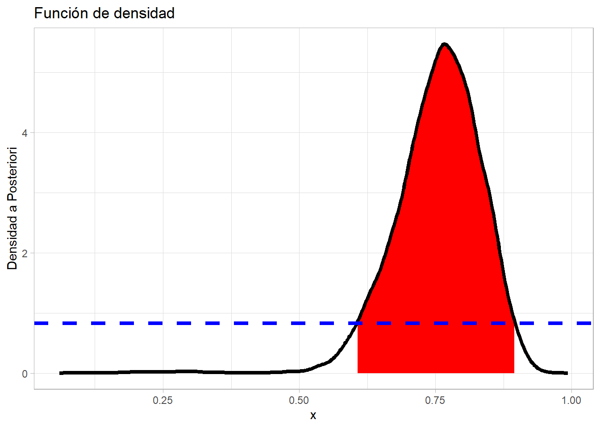
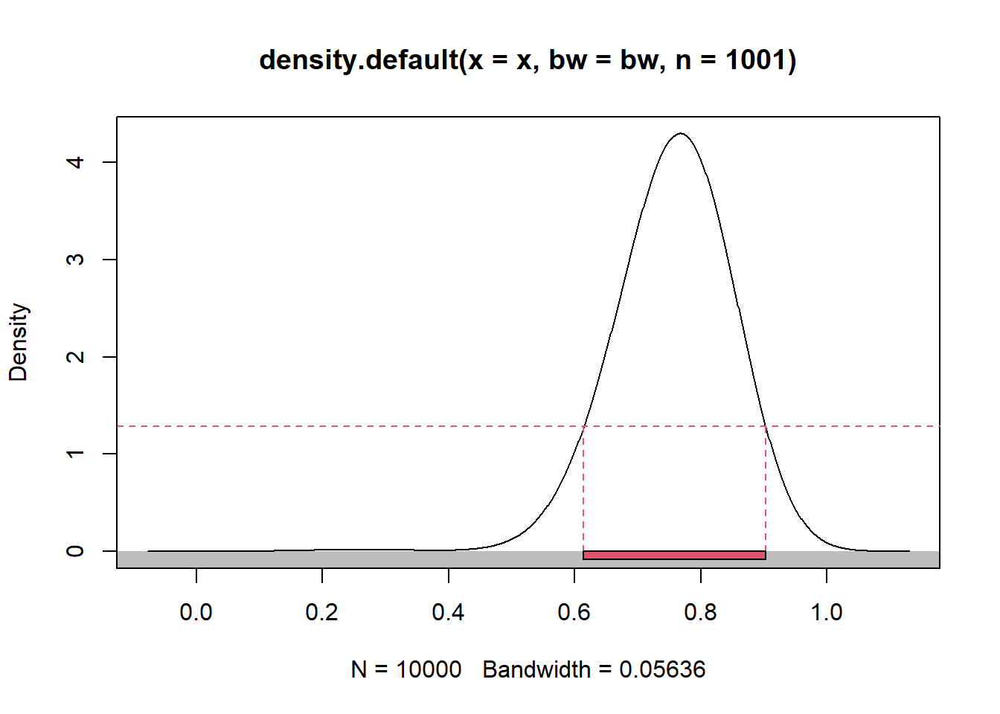
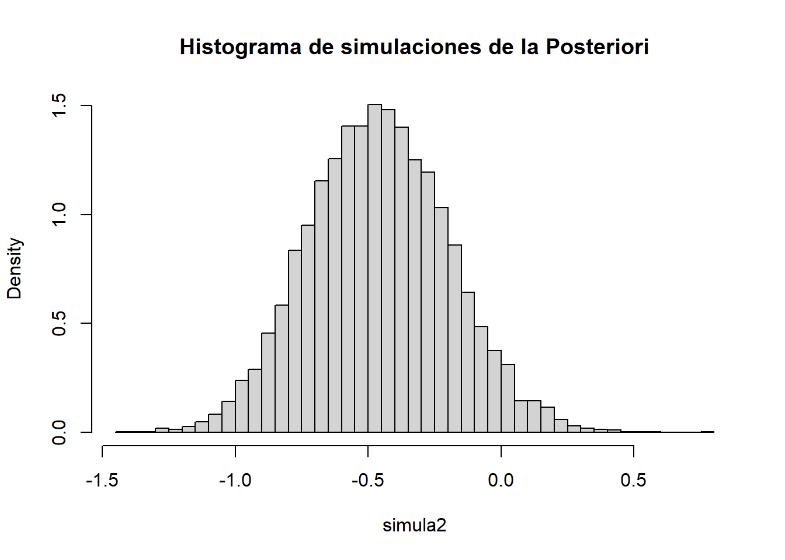
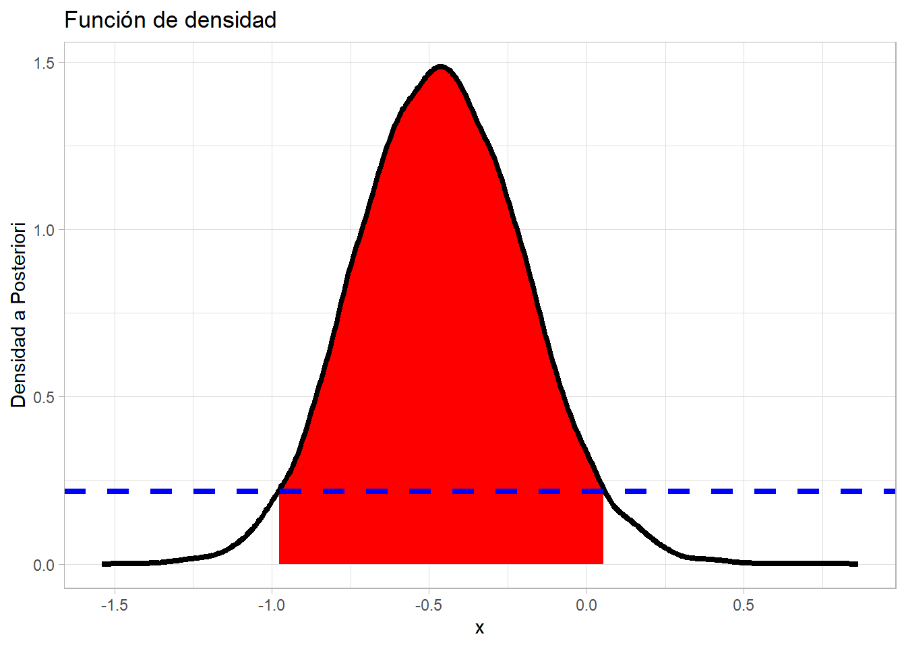
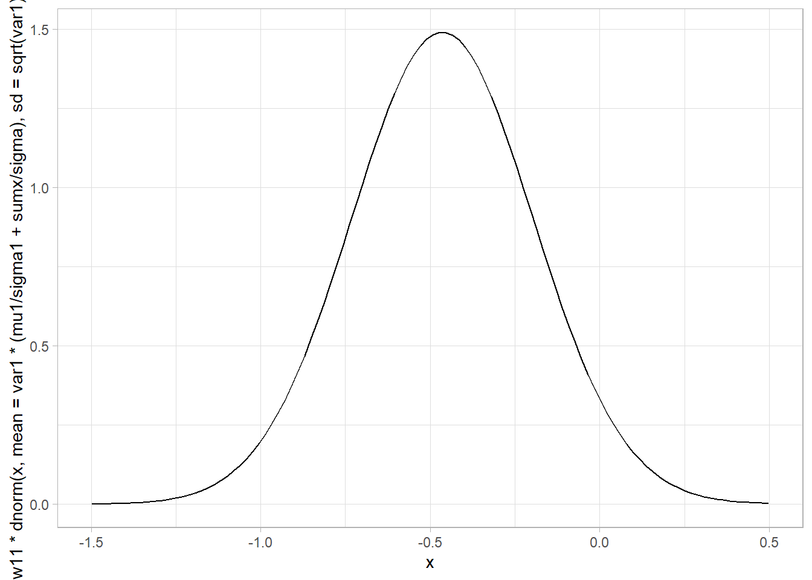

n <- 17
Y <- 10
a_1 <- 1 # \alpha_1
b_1 <- 23 # \beta_1
a_2 <- 15 # \alpha_2
b_2 <- 1 # \beta_2
C_1 <- gamma(n+1)*gamma(a_1+b_1)*gamma(Y+a_1)*gamma(n-Y+b_1)/(gamma(n-Y+1)*gamma(Y+1)*gamma(a_1+b_1+n)*gamma(a_1)*gamma(b_1))
C_2 <- gamma(n+1)*gamma(a_2+b_2)*gamma(Y+a_2)*gamma(n-Y+b_2)/(gamma(n-Y+1)*gamma(Y+1)*gamma(a_2+b_2+n)*gamma(a_2)*gamma(b_2))Metodos bayesianos - Ayudantia 8
Metodos bayesianos
Ayudantía 8
Ejercicio 1
Se tiene una caja con dos casillas que contienen chas rojas y blancas, y se gana si, al extraer una cha de manera aleatoria desde la caja, la ficha extraida es roja.
Un mago ha anunciado las probabilidades de extraer una ficha roja en cada compartimento, indicando que, en una de las casillas, la probabilidad de obtener una ficha roja es 0.04 mientras que, en la otra casilla, esta probabilidad es de 0.875.
Además, es importante destacar que el mago menciona que la probabilidad de escoger la casilla 1 o 2 es la misma.
Sin embargo, un amigo que ha presenciado el acto de magia, sospecha que existe una variabilidad en la información dada por el mago indicando que las probabilidades mencionadas corresponden a promedios o medias pero que poseen una varianza.
Según él, una casilla tiene una probabilidad de 0.04 de poseer una ficha roja con una varianza de 0.00007, mientras que la otra posee una probabilidad de 0.875 con una varianza de 0.0032.
Además, el mago menciona que de las 17 personas que participaron en el acto, sólo 10 personas sacaron una ficha roja.
Determine la probabilidad de ganar, teniendo en cuenta tanto las probabilidades dadas por el mago como la información adicional proporcionada por el amigo.
Considere el siguiente modelo de mezcla:
Verosimilitud \(Y|\theta \sim \textup{Bin}(n,\theta)\), Priori \(\theta \sim \frac{1}{2}\textup{Beta}(1,23) + \frac{1}{2}\textup{Beta}(15,1)\)
- Encuentre la distribución a posteriori.
Usaremos la fórmula conocida para obtener una posteriori proveniente de una priori que es mezcla de distribuciones: \(p^{(1)}(\theta|x) = \sum_{j=1}^k \frac{C_j \cdot c_j}{\sum_{i=1}^k C_i \cdot c_i} \cdot p_j^{(1)}(\theta)\), en este caso \(k=2\). Luego para la primera parte de la distribución a posteriori se tiene que:
\(p_1^{(1)}(\theta) \propto p(x|\theta) \cdot p_1^{(0)}(\theta)\)
\(\propto \theta^Y(1-\theta)^{n-Y} \cdot \theta^{\alpha-1}(1-\theta)^{\beta-1} \cdot 1_{[0,1]}(\theta)\)
\(\propto \theta^{Y+\alpha-1}(1-\theta)^{n-Y+\beta-1} \cdot 1_{[0,1]}(\theta)\)
Este es el kernel de una \(\textup{Beta}(Y+\alpha, n-Y+\beta)\). De hecho, para la segunda parte de la posteriori \(p_2^{(1)}(\theta)\) también se puede usar este mismo resultado, solo cambian los parámetros de \(\alpha, \beta\).
Ahora solo queda determinar los pesos actualiados de la posteriori:
\(C_1 = \int_0^1 p(x|\theta) p_1^{(0)}(\theta) d\theta\)
\(= \int_0^1 \binom{n}{Y}/Beta(\alpha, \beta) \cdot \theta^{Y+\alpha-1}(1-\theta)^{n-Y+\beta-1} d\theta\)
\(= \binom{n}{Y} \frac{\Gamma(\alpha + \beta)}{\Gamma(\alpha)\Gamma(\beta)} \int_0^1 \frac{\theta^{Y+\alpha-1}(1-\theta)^{n-Y+\beta-1}}{Beta(Y+\alpha, n-Y+\beta)}Beta(Y+\alpha, n-Y+\beta) d\theta\)
\(= \binom{n}{Y} \frac{\Gamma(\alpha + \beta)}{\Gamma(\alpha)\Gamma(\beta)} \cdot \frac{\Gamma(Y+\alpha)\Gamma(n-Y+\beta)}{\Gamma(n+\alpha+\beta)} d\theta\)
Luego, de hecho esto también es aplicable a \(C_2\), ya que solo cambian los parámetros \(\alpha\) y \(\beta\). Calculamos estos valores con RStudio:
Calculamos \(C\) haciendo un promedio ponderado de los \(C_j\), donde la ponderación es \(\frac{1}{2}\) según el modelo propuesto para cada \(C_j\), luego:
C <- 0.5*C_1 + 0.5*C_2Los pesos actualizados se obtienen con \(w_j^{(1)} = \frac{w_j^{(0)}C_j}{\sum_i w_i^{(0)}C_i} = \frac{w_j^{(0)}C_j}{C}\).
(w_1 <- 0.5 * C_1 / C)[1] 0.005048135(w_2 <- 0.5 * C_2 / C)[1] 0.9949519Luego, ya tenemos armada la densidad a posteriori, que es una distribución mixta: \(p(\theta|x) = 0.005 \cdot \textup{Beta}(10+1,17-10+23) + 0.995 \cdot \textup{Beta}(10+15,17-10+1)\). Entonces procedemos a simular desde esta distribución para obtener una gráfica de la forma de su densidad:
set.seed(2023)
simula <- NULL
for (j in 1:10000) {
if (runif(1) < w_1){
simula[j] <- rbeta(1, Y+a_1, n-Y+b_1)
}
else{
simula[j] <- rbeta(1, Y+a_2, n-Y+b_2)
}
}
hist(simula,
probability = T,
breaks = 50,
main = "Histograma de simulaciones de la Posteriori"
)Luego, además de obtener intervalos de confianza con la función hpd() usando la función inversa de la distribución, también se pueden usar, en general, vectores con simulaciones de la v.a.. Entonces usando esto, calculamos las respectivas regiones de credibilidad:
library(TeachingDemos)Warning: package 'TeachingDemos' was built under R version 4.2.3intervalo <- emp.hpd(simula, conf=0.95)
intervalo[1] 0.6115668 0.8988404La opción anterior no nos da la región hpd, sino que el intervalo hpd. Si se quiere la región hpd, podemos usar la función hdi(), de la librería HDInterval:
library(HDInterval)Warning: package 'HDInterval' was built under R version 4.2.3hdi(simula, allowSplit = TRUE, credMass = 0.95) lower upper
0.6115668 0.8988404
attr(,"credMass")
[1] 0.95También podemos usar la función density() para generar un objeto tipo density que permite graficar la densidad, entre otras cosas:
library(ggplot2)
densidad <- density(simula)
datos <- data.frame(x = densidad$x, y = densidad$y)
intervalo <- hdi(densidad, allowSplit = TRUE, credMass = 0.95) #Al aplicar density() el intervalo cambia un poco
fdp.int <- attr(intervalo, 'height')
#hdi también devuelve los extremos de los intervalos evaluados en la densidad (en este caso solo es un punto el que devuelve, ya que ambos extremos evaluados valen lo mismo). Para obtenerlos se puede usar esto
ggplot(data=datos, mapping=aes(x = x, y = y)) +
geom_ribbon(data=datos[datos$x < intervalo[2],][datos$x > intervalo[1],], mapping = aes(ymin=0, ymax=y), fill = "red") +
geom_line(lwd=1.5) +
labs(title = "Función de densidad",
x = "x",
y = "Densidad a Posteriori"
) +
geom_hline(yintercept=fdp.int, linetype="dashed", lwd=1.5, color="blue") +
theme_light()
library(hdrcde)Warning: package 'hdrcde' was built under R version 4.2.3This is hdrcde 3.4region <- hdr.den(simula, prob=95) # En porcentaje
region$hdr
[,1] [,2]
95% 0.6142511 0.9028507
$mode
[1] 0.7667075
$falpha
5%
1.283309 Ejercicio Extra
Considere \(x_1, ..., x_{10} | \theta \stackrel{iid}{\sim} N(\theta,1)\), en donde su media observada es \(\bar{y} = - 0.25\). Considere una priori \(\theta \sim 0.9 \cdot N(1,0.5^2) + 0.1 \cdot N(-1, 0.5^2)\) Encuentre la distribución a posteriori y la región HPD de un 95% de credibilidad.
Para obtener la distribución a posteriori usaremos la fórmula conocida. Entonces para usarla debemos calcular las posterioris correspondientes de las densidades que conforman la priori mixta:
\(p_j^{(1)}(\theta) \propto \exp \left\{ -\frac{1}{2\sigma^2} (\sum x_i^2 - 2\theta \sum x_i + n\theta^2) \right\} \cdot \exp \left\{ -\frac{1}{2\sigma_j^2} (\theta^2 - 2\mu_j \theta + \mu_j^2) \right\}\)
(Este es un modelo normal-normal)
\(p_j^{(1)}(\theta) \propto \exp \left\{ -\frac{1}{2 \sigma^2 \sigma_j^2} (- \sigma_j^2 \cdot 2\theta \sum x_i + \sigma_j^2 \cdot n\theta^2 - \sigma^2 \cdot 2\mu_j \theta + \sigma^2 \cdot \theta) \right\}\)
\(\propto \exp \left\{ -\frac{1}{2 \sigma^2 \sigma_j^2} (- 2\theta (\sigma_j^2 \sum x_i + \sigma^2 \mu_j) + \theta^2 (\sigma_j^2 n + \sigma^2) ) \right\}\)
\(\propto \exp \left\{ -\frac{\sigma_j^2 n + \sigma^2}{2 \sigma^2 \sigma_j^2} (- 2\theta (\frac{\sigma_j^2 \sum x_i + \sigma^2 \mu_j}{\sigma_j^2 n + \sigma^2}) + \theta^2) \right\}\)
\(\propto \exp \left\{ - \frac{1}{2} \left( \frac{n}{\sigma^2} + \frac{1}{\sigma_j^2} \right)^{-1} \left( - 2\theta \left( \frac{n}{\sigma^2} + \frac{1}{\sigma_j^2} \right)^{-1} \left( \frac{\mu_j}{\sigma_j^2} + \frac{\sum x_i}{\sigma^2} \right) + \theta^2 \right) \right\}\)
Este es el kernel de una \(\theta|y \sim N \left( \left( \frac{n}{\sigma^2} + \frac{1}{\sigma_j^2} \right)^{-1} \left( \frac{\mu_j}{\sigma_j^2} + \frac{\sum x_i}{\sigma^2} \right), \left( \frac{n}{\sigma^2} + \frac{1}{\sigma_j^2} \right)^{-1} \right)\).
Ahora, queremos calcular los pesos actualizados a estas posterioris, entonces: \(C_j = \int_{\mathbb{R}} \left( \frac{1}{\sqrt{2\pi\sigma^2}} \right)^n \exp \left\{ -\frac{1}{2\sigma^2} (\sum x_i^2 - 2\theta \sum x_i + n\theta^2) \right\} \cdot \left( \frac{1}{\sqrt{2\pi\sigma_j^2}} \right) \exp \left\{ -\frac{1}{2\sigma_j^2} (\theta^2 - 2\mu_j \theta + \mu_j^2) \right\} d\theta\)
\(= \left( \frac{1}{\sqrt{2\pi\sigma^2}} \right)^n \cdot \left( \frac{1}{\sqrt{2\pi\sigma_j^2}} \right) \int_{\mathbb{R}} \exp \left\{ -\frac{1}{2\sigma^2\sigma_j^2} (\sigma_j^2\sum x_i^2 - 2\theta \sigma_j^2\sum x_i + \theta^2 \sigma_j^2n + \theta^2\sigma^2 - 2\sigma^2\theta \mu_j + \sigma^2\mu_j^2) \right\} d\theta\)
\(= \left( \frac{1}{\sqrt{2\pi\sigma^2}} \right)^n \cdot \left( \frac{1}{\sqrt{2\pi\sigma_j^2}} \right) \cdot e^{-\frac{\sigma_j^2\sum x_i^2 + \sigma^2\mu_j}{2\sigma^2\sigma_j^2}} \int_{\mathbb{R}} \exp \left\{ -\frac{1}{2\sigma^2\sigma_j^2} (- 2\theta (\sigma_j^2\sum x_i + \sigma^2\mu_j) + \theta^2 (\sigma_j^2n + \sigma^2)) \right\} d\theta\)
\(= \left( \frac{1}{\sqrt{2\pi\sigma^2}} \right)^n \cdot \left( \frac{1}{\sqrt{2\pi\sigma_j^2}} \right) \cdot \exp \left\{ -\frac{\sigma_j^2\sum x_i^2 + \sigma^2\mu_j}{2\sigma^2\sigma_j^2} + \frac{\left( \frac{n}{\sigma^2} + \frac{1}{\sigma_j^2} \right)^{-2} \left( \frac{\mu_j}{\sigma_j^2} + \frac{\sum x_i}{\sigma^2} \right)^2}{2\left( \frac{n}{\sigma^2} + \frac{1}{\sigma_j^2} \right)^{-1}} \right\} \int_{\mathbb{R}} \exp \left\{ -\frac{1}{2}\left( \frac{n}{\sigma^2} + \frac{1}{\sigma_j^2} \right)^{-1} \left( \theta - \left( \frac{n}{\sigma^2} + \frac{1}{\sigma_j^2} \right)^{-1} \left( \frac{\mu_j}{\sigma_j^2} + \frac{\sum x_i}{\sigma^2} \right) \right)^2 \right\} d\theta\)
\(= \left( \frac{1}{\sqrt{2\pi(n\sigma_j^2 + \sigma^2)^{-1}}} \right)^{n} \cdot \exp \left\{ -\frac{\sigma_j^2\sum x_i^2 + \sigma^2\mu_j}{2\sigma^2\sigma_j^2} + \frac{\left( \frac{n}{\sigma^2} + \frac{1}{\sigma_j^2} \right)^{-1} \left( \frac{\mu_j}{\sigma_j^2} + \frac{\sum x_i}{\sigma^2} \right)^2}{2} \right\}\)
\(= \left( \frac{1}{\sqrt{2\pi(n\sigma_j^2 + \sigma^2)^{-1}}} \right)^{n} \cdot \exp \left\{ -\frac{\sigma_j^2\sum x_i^2 + \sigma^2\mu_j}{2\sigma^2\sigma_j^2} + \frac{\sigma^2\sigma_j^2 \left( \frac{\mu_j}{\sigma_j^2} + \frac{\sum x_i}{\sigma^2} \right)^2}{2 (n\sigma_j^2 + \sigma^2)} \right\}\)
\(= \left( \frac{1}{\sqrt{2\pi(n\sigma_j^2 + \sigma^2)^{-1}}} \right)^{n} \cdot \exp \left\{ -\frac{\sum x_i^2}{2\sigma^2} - \frac{\mu_j}{2\sigma^2_j} + \frac{ \frac{\sigma^2\mu_j^2}{\sigma_j^2} + 2\mu_j\sum x_i + \sigma_j^2\frac{(\sum x_i)^2}{\sigma^2}}{2 (n\sigma_j^2 + \sigma^2)} \right\}\)
\(= \left( \frac{1}{\sqrt{2\pi(n\sigma_j^2 + \sigma^2)^{-1}}} \right)^{n} \cdot \exp \left\{ \frac{-\frac{\sum x_i^2}{\sigma^2}n\sigma_j^2 - \sum x_i^2 - \mu_j n - \frac{\mu_j}{\sigma^2_j}\sigma^2}{2 (n\sigma_j^2 + \sigma^2)} + \frac{ \frac{\sigma^2\mu_j^2}{\sigma_j^2} + 2\mu_j\sum x_i + \sigma_j^2\frac{(\sum x_i)^2}{\sigma^2}}{2 (n\sigma_j^2 + \sigma^2)} \right\}\)
Luego, podemos calcular estas constantes:
n <- 10
sumx <- -2.5
sigma1 <- 0.5^2
sigma2 <- 0.5^2
mu1 <- 1
mu2 <- -1
sigma <- 1
denom1 <- (n * sigma1 + sigma)^(-1)
denom2 <- (n * sigma2 + sigma)^(-1)
C1 <- (2*pi*denom1)^(-n/2) * exp(denom1*(-sumx*n*sigma1/sigma - sumx - mu1*n - mu1*sigma1/sigma + sigma*mu1^2/sigma1 + 2*mu1*sumx + sigma1*sumx^2/sigma)) # No conocemos sum x_i^2, pero igual se cancelará, lo único que no es lo que lleva \mu_j, pues es diferente para j=1,2.
C2 <- (2*pi*denom2)^(-n/2) * exp(denom2*(-sumx*n*sigma2/sigma - sumx - mu2*n - mu2*sigma2/sigma + sigma*mu2^2/sigma2 + 2*mu2*sumx + sigma2*sumx^2/sigma))
w01 <- 0.9
w02 <- 0.1
C <- w01 * C1 + w02 * C2
# Pesos a posteriori
w11 <- w01 * C1 / C
w12 <- w02 * C2 / CLuego, la distribución a posteriori es: \(\theta|y \sim 0.0015 \cdot N\left( \left( \frac{n}{\sigma^2} + \frac{1}{\sigma_1^2} \right)^{-1} \left( \frac{\mu_1}{\sigma_1^2} + \frac{\sum x_i}{\sigma^2} \right), \left( \frac{n}{\sigma^2} + \frac{1}{\sigma_1^2} \right)^{-1} \right) + 0.9985 \cdot N \left( \left( \frac{n}{\sigma^2} + \frac{1}{\sigma_2^2} \right)^{-1} \left( \frac{\mu_2}{\sigma_2^2} + \frac{\sum x_i}{\sigma^2} \right), \left( \frac{n}{\sigma^2} + \frac{1}{\sigma_2^2} \right)^{-1} \right)\). Entonces podemos simular a partir de esta distribución:
var1 <- (n/sigma + 1/sigma1)^(-1)
var2 <- (n/sigma + 1/sigma2)^(-1)
set.seed(2023)
simula2 <- NULL
for (j in 1:10000) {
if (runif(1) < w11){
simula2[j] <- rnorm(1, mean = var1*(mu1/sigma1 + sumx/sigma), sd = sqrt(var1))
}
else{
simula2[j] <- rnorm(1, mean = var2*(mu2/sigma2 + sumx/sigma), sd = sqrt(var2))
}
}
hist(simula2,
probability = T,
breaks = 50,
main = "Histograma de simulaciones de la Posteriori"
)
Graficamos:
densidad <- density(simula2)
datos <- data.frame(x = densidad$x, y = densidad$y)
intervalo <- hdi(densidad, allowSplit = TRUE, credMass = 0.95)
fdp.int <- attr(intervalo, 'height')
ggplot(data=datos, mapping=aes(x = x, y = y)) +
geom_ribbon(data=datos[datos$x < intervalo[2],][datos$x > intervalo[1],], mapping = aes(ymin=0, ymax=y), fill = "red") +
geom_line(lwd=1.5) +
labs(title = "Función de densidad",
x = "x",
y = "Densidad a Posteriori"
) +
geom_hline(yintercept=fdp.int, linetype="dashed", lwd=1.5, color="blue") +
theme_light()
x <- seq(-10, 9, length.out = 1000)
ggplot(NULL, mapping=aes(x = x, y = w11*dnorm(x, mean = var1*(mu1/sigma1 + sumx/sigma), sd = sqrt(var1)) + w12*dnorm(x, mean = var2*(mu2/sigma2 + sumx/sigma), sd = sqrt(var2)))) +
geom_line() +
scale_x_continuous(limits = c(-1.5,0.5)) +
theme_light()Warning: Removed 894 row(s) containing missing values (geom_path).